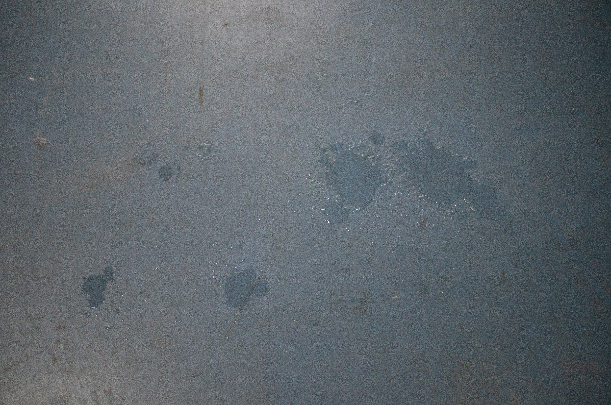
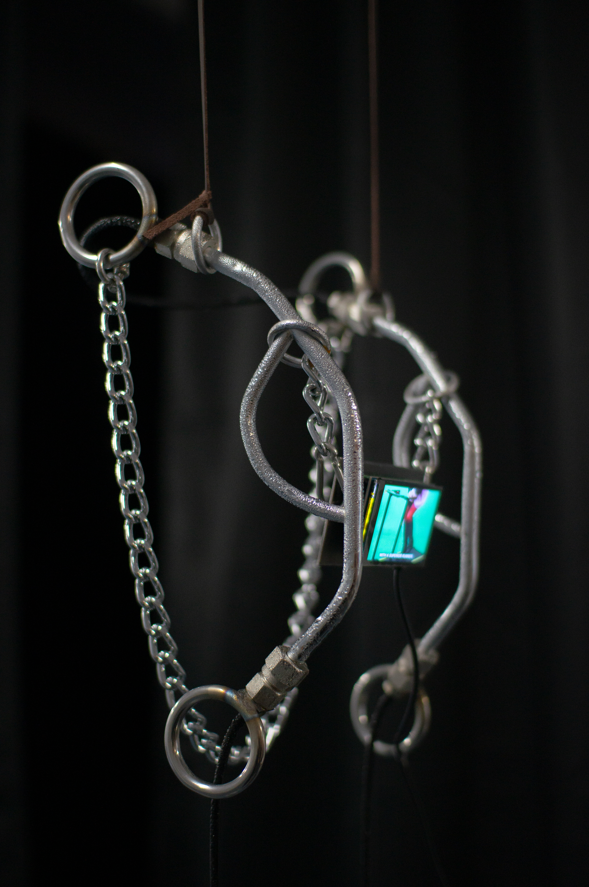
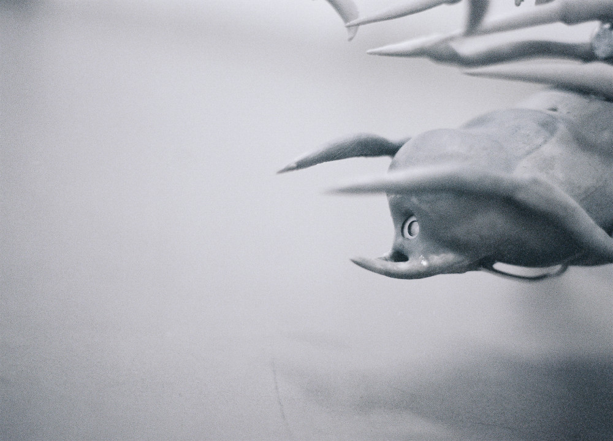
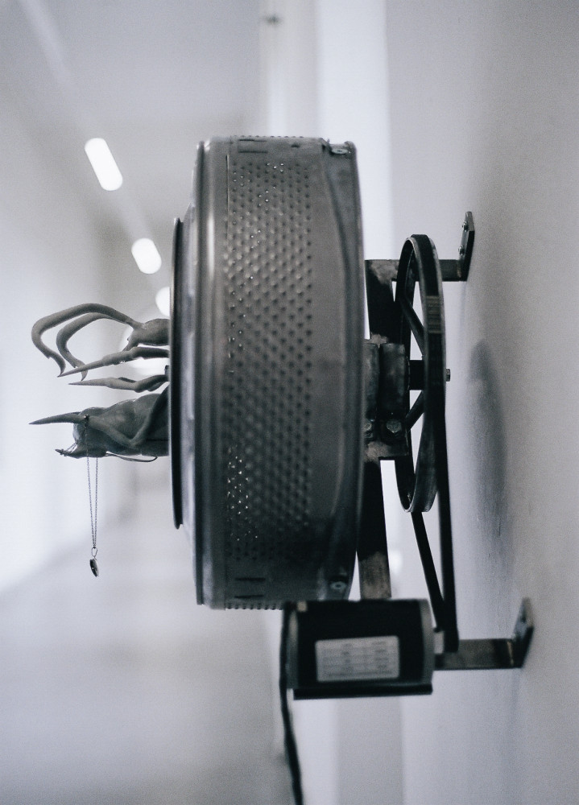
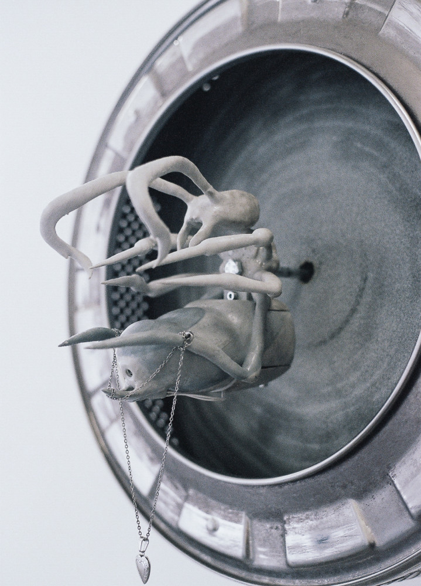
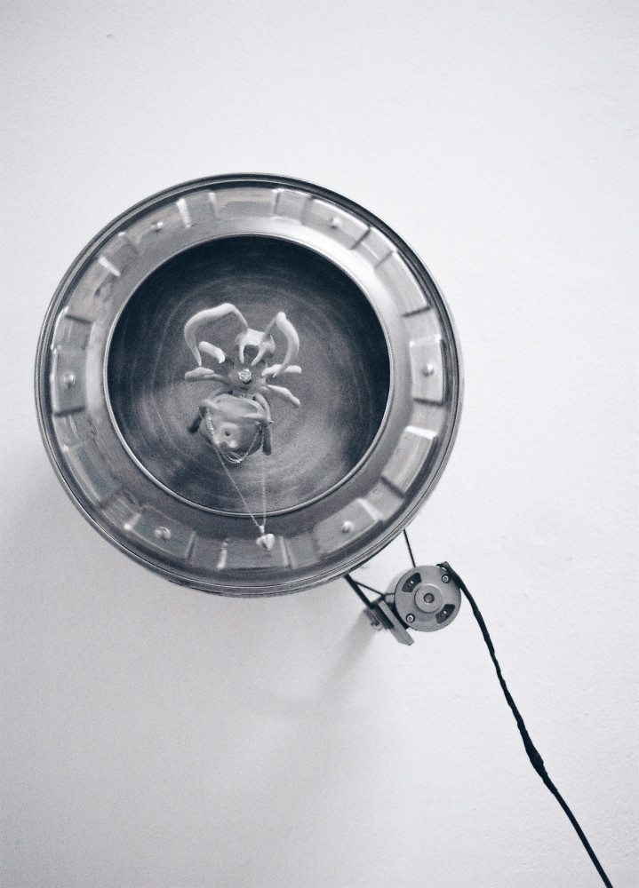
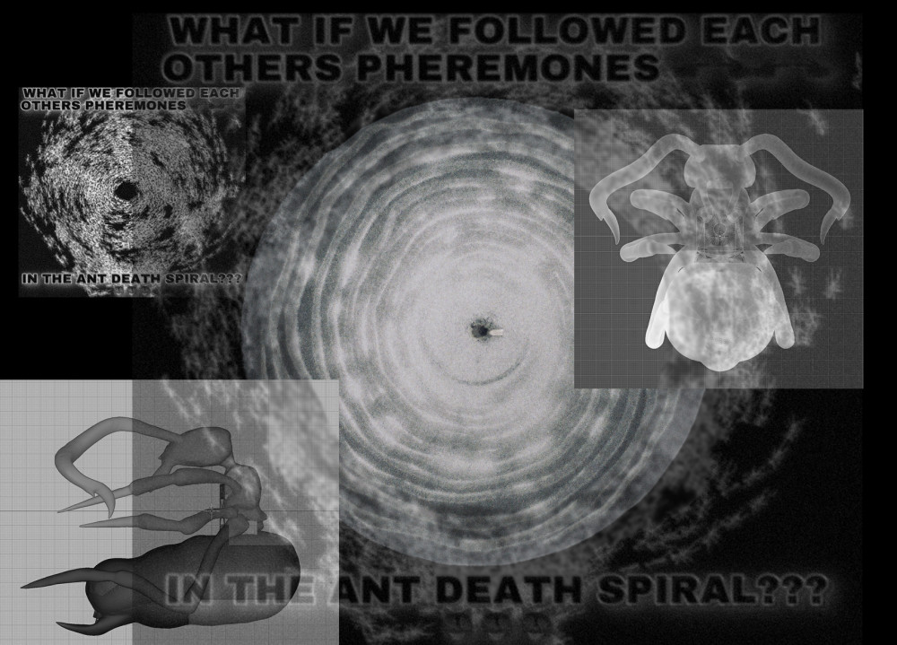
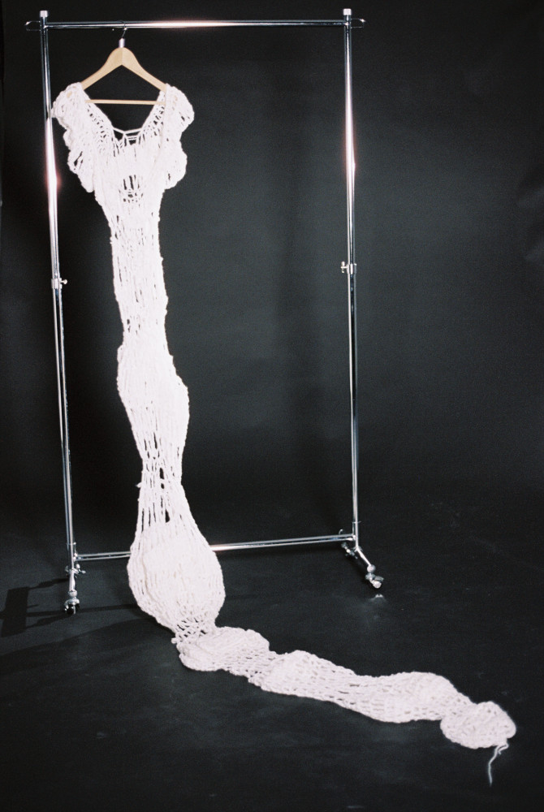

some of my works exploring exhaustion :—)
I will never be as fast as a horse (2025)
:(
I haven't documented this work yet.
Here is a video of the class documentation from this year's Rundgang.
(If you follow this link, you will find my lousy upload on the Rundgang announcement page.)
Embedded below this text is the video, which is also part of the installation.
Backyard Daydream (Flawless issues) (2025)
This developed out of a music video assignment. A love song turned into Insomnia.
The song's nostalgic lyrics and tone, combined with its sounds and lo-fi production,
create a sense of the past haunting the present.
Memory is portrayed as a ghostly presence that shapes perception and triggers a longing
for what was and what could have been.
Insomnia explores this in-between state.
The protagonist is unable to move forward and face the new day,
paradoxically falling asleep as the sun rises.
As night deepens, this state becomes increasingly distorted,
like restless memories looping endlessly in the mind.
what if we followed each other's pheromones in the ant death spiral?? (2024)
The 'ant mill' has been observed in army ants that have lost their pheromone trail,
resulting in a spiral formation in which the ants mistakenly follow each other,
eventually leading to death by exhaustion. Pursued by an invisible and unconscious force,
it is almost as if they desire their own destruction.
The video documentation can be seen here. (https://youtu.be/WmBSxrvr6hg)
[materials: washing machine drum, pheromone perfume, aroma diffuser made of resin,
print on foam, electronics; welding support by Maxim Tur]
annual shedding (2024-)
On the day of your birthday:
1. Crochet an encasing around yourself
2. Shed
3. Repeat yearly
Duration:
from 05.02.2024, 18.56 pm
to 06.02.2024, 18.58 pm.
A video documentation of the 24 hours birthday performance is available here.
(https://youtu.be/7r5Pfq8uQzc)
However, please note that the SD card broke during filming,
which is the reason for the limited footage.

Compressed quality due to limited upload capacity. Sorry!

Watch it on youtube :-)





